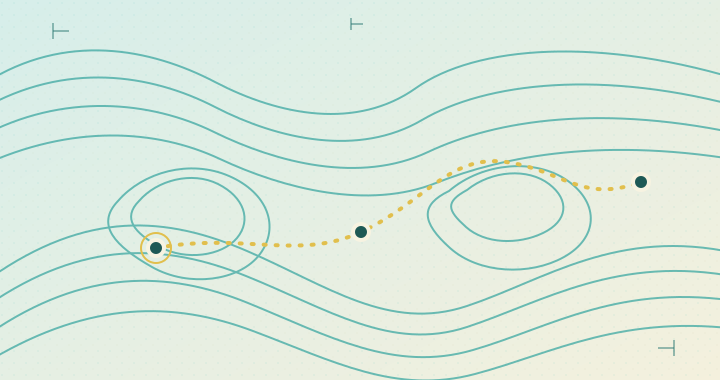

01 / Heading instrument
RADIAL SCANNER
N / REFERENCERETURNS / 03
HEADING 064°
Local sample geometry · no scan or traversal recorded
Experimental reference package
2020 PC direction · original interface specimens
Navigation / scan / observation
Warm field notes, clear cyan contours, and a single yellow route signal. All coordinates and organisms on this board are original fictional examples.
01 / Heading instrument
Local sample geometry · no scan or traversal recorded
02 / Topographic path

SYNTHETIC RETURN MARKS / NOT GAME MAPNOT TO SCALE03 / Catalog specimen

S-03 / FICTIONAL SAMPLE
Pale edge response; shape not classified.
NOT TAXONOMY / INVENTEDNo sample action recorded. Local prototype state only.
04 / Observation list
Cyan return behind the shelf.
Suit marker moved east.
Route ended at an uncharted contour.
FICTIONAL OBSERVATIONS / SAMPLE VALUES / NO GAME SAVE